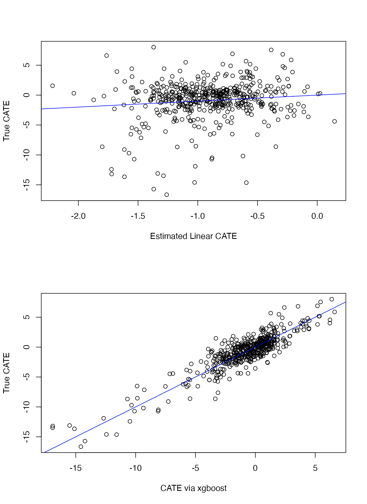

vignettes/fitting_itrs_with_xgboost.Rmd
fitting_itrs_with_xgboost.RmdTo demonstrate how to estimate flexible individualized treatment
rules using xgboost in the personalized
package, we simulate data with a binary treatment and a complex
relationship between covariates and the effect of the treatment. The
treatment assignments are based on covariates and thus mimic an
observational setting with no unmeasured confounders.
In this simulation, the treatment assignment depends on covariates and hence we must model the propensity score \(\pi(x) = Pr(T = 1 | X = x)\). In this simulation we will assume that larger values of the outcome are better.
library(personalized)
set.seed(1)
n.obs <- 500
n.vars <- 10
x <- matrix(rnorm(n.obs * n.vars, sd = 1), n.obs, n.vars)
# simulate non-randomized treatment
xbetat <- 0.5 + 0.25 * x[,1] - 0.25 * x[,5]
trt.prob <- exp(xbetat) / (1 + exp(xbetat))
trt <- rbinom(n.obs, 1, prob = trt.prob)
# simulate delta (CATE) as a complex function of the covariates
delta <- 2*(0.25 + x[,1] * x[,2] - x[,3] ^ {-2} * (x[,3] > 0.35) +
(x[,1] < x[,3]) - (x[,1] < x[,2]))
# simulate main effects g(X)
xbeta <- x[,1] + x[,2] + x[,4] - 0.2 * x[,4]^2 + x[,5] + 0.2 * x[,9] ^ 2
xbeta <- xbeta + delta * (2 * trt - 1) * 0.5
# simulate continuous outcomes
y <- drop(xbeta) + rnorm(n.obs)To estimate any ITR, we first must construct a propensity score function. We also optionally (and highly recommended for performance) can define an augmentation function that estimates main effects of covariates.
The personalized package has functionality for doing so
using cross-fitting (see the vignette for augmentation):
# arguments can be passed to cv.glmnet via `cv.glmnet.args`.
# normally we would set the number of crossfit folds and internal folds to be larger,
# but have reduced it to make computation time shorter
prop.func <- create.propensity.function(crossfit = TRUE,
nfolds.crossfit = 4,
cv.glmnet.args = list(type.measure = "auc", nfolds = 3))
aug.func <- create.augmentation.function(family = "gaussian",
crossfit = TRUE,
nfolds.crossfit = 4,
cv.glmnet.args = list(type.measure = "mse", nfolds = 3))For the sake of comparison, first fit a linear ITR. We have set
nfolds to 3 for computational reasons; it should generally
be higher, such as 10.
subgrp.model.linear <- fit.subgroup(x = x, y = y,
trt = trt,
propensity.func = prop.func,
augment.func = aug.func,
loss = "sq_loss_lasso",
nfolds = 3) # option for cv.glmnet (for ITR estimation)
summary(subgrp.model.linear)## family: gaussian
## loss: sq_loss_lasso
## method: weighting
## cutpoint: 0
## augmentation
## function: augment.func
## propensity
## function: propensity.func
##
## benefit score: f(x),
## Trt recom = 1*I(f(x)>c)+0*I(f(x)<=c) where c is 'cutpoint'
##
## Average Outcomes:
## Recommended 0 Recommended 1
## Received 0 0.4082 (n = 192) -1.5707 (n = 2)
## Received 1 -0.4157 (n = 305) -2.2139 (n = 1)
##
## Treatment effects conditional on subgroups:
## Est of E[Y|T=0,Recom=0]-E[Y|T=/=0,Recom=0]
## 0.8239 (n = 497)
## Est of E[Y|T=1,Recom=1]-E[Y|T=/=1,Recom=1]
## -0.6432 (n = 3)
##
## NOTE: The above average outcomes are biased estimates of
## the expected outcomes conditional on subgroups.
## Use 'validate.subgroup()' to obtain unbiased estimates.
##
## ---------------------------------------------------
##
## Benefit score quantiles (f(X) for 1 vs 0):
## 0% 25% 50% 75% 100%
## -1.10799 -0.57674 -0.44738 -0.33098 0.07272
##
## ---------------------------------------------------
##
## Summary of individual treatment effects:
## E[Y|T=1, X] - E[Y|T=0, X]
##
## Min. 1st Qu. Median Mean 3rd Qu. Max.
## -2.2160 -1.1535 -0.8948 -0.9094 -0.6620 0.1454
##
## ---------------------------------------------------
##
## 5 out of 10 interactions selected in total by the lasso (cross validation criterion).
##
## The first estimate is the treatment main effect, which is always selected.
## Any other variables selected represent treatment-covariate interactions.
##
## Trt1 V1 V3 V4 V5 V9
## Estimate -0.45 -0.134 -0.1052 0.0699 0.0118 0.01The personalized package allows use of xgboost routines for direct estimation of the CATE (conditional average treatment effect) based on gradient boosted decision trees. This allows for highly flexible estimates of the CATE and thus benefit scores.
Several arguments used by the xgb.train() and
xgb.cv() functions from xgboost must be
specified; they are:
params: the list of parameters for the underlying
xgboost model (see help file for xgb.train():
this includes eta, max_depth,
nthread, subsample,
colsample_bytree, etc). However, note that
objective and eval_metric will be overwritten,
as they need to be set to custom values to work within
personalized.nfold: number of cross validation folds to be used by
xgb.cv() for tuningnrounds: the number of boosting iterationsearly_stopping_rounds: can optionally be set. If set to
an integer k, training will stop if the performance doesn’t
improve for k rounds.We have set nfolds to 3 for computational reasons; it
should generally be higher, such as 10.
## xgboost tuning parameters to use:
param <- list(max_depth = 5, eta = 0.01, nthread = 1,
booster = "gbtree", subsample = 0.623, colsample_bytree = 1)
subgrp.model.xgb <- fit.subgroup(x = x, y = y,
trt = trt,
propensity.func = prop.func,
augment.func = aug.func,
## specify xgboost via the 'loss' argument
loss = "sq_loss_xgboost",
nfold = 3,
params = param, verbose = 0,
nrounds = 5000, early_stopping_rounds = 50)
subgrp.model.xgb## family: gaussian
## loss: sq_loss_xgboost
## method: weighting
## cutpoint: 0
## augmentation
## function: augment.func
## propensity
## function: propensity.func
##
## benefit score: f(x),
## Trt recom = 1*I(f(x)>c)+0*I(f(x)<=c) where c is 'cutpoint'
##
## Average Outcomes:
## Recommended 0 Recommended 1
## Received 0 1.7095 (n = 107) -1.3048 (n = 87)
## Received 1 -1.5548 (n = 177) 1.1216 (n = 129)
##
## Treatment effects conditional on subgroups:
## Est of E[Y|T=0,Recom=0]-E[Y|T=/=0,Recom=0]
## 3.2643 (n = 284)
## Est of E[Y|T=1,Recom=1]-E[Y|T=/=1,Recom=1]
## 2.4264 (n = 216)
##
## NOTE: The above average outcomes are biased estimates of
## the expected outcomes conditional on subgroups.
## Use 'validate.subgroup()' to obtain unbiased estimates.
##
## ---------------------------------------------------
##
## Benefit score quantiles (f(X) for 1 vs 0):
## 0% 25% 50% 75% 100%
## -8.4688 -0.9660 -0.2056 0.3896 3.3069
##
## ---------------------------------------------------
##
## Summary of individual treatment effects:
## E[Y|T=1, X] - E[Y|T=0, X]
##
## Min. 1st Qu. Median Mean 3rd Qu. Max.
## -16.9377 -1.9319 -0.4113 -0.8605 0.7792 6.6139We first run the training/testing procedure to assess the performance
of the linear estimator (ideally, with the number of replications larger
than B=100). Note we do not run this part due to
computation time.
valmod.lin <- validate.subgroup(subgrp.model.linear, B = 100,
method = "training_test",
train.fraction = 0.75)
valmod.linThen we compare with the xgboost-based estimator. Although this is based on just 5 replications, we can see that the xgboost estimator is much better at discriminating between benefitting and non-benefitting patients, as would be evidenced by the large treatment effect among those predicted to benefit by the xgboost estimator and below in the plots as the estimated conditional average treatment effect (CATE) of the xgboost estimator tracks better with the true CATE than does the linear estimate.
valmod.xgb <- validate.subgroup(subgrp.model.xgb, B = 100,
method = "training_test",
train.fraction = 0.75)
valmod.xgbWe also plot the estimated CATE versus the true CATE for each approach:
## RMSE (note: this is still on the in-sample data so
## out-of-sample RMSE is preferred to evaluate methods)
sqrt(mean((delta - treatment.effects(subgrp.model.linear)$delta) ^ 2))## [1] 3.195867
sqrt(mean((delta - treatment.effects(subgrp.model.xgb)$delta) ^ 2))## [1] 1.439912
par(mfrow = c(2,1))
plot(delta ~ treatment.effects(subgrp.model.linear)$delta,
ylab = "True CATE", xlab = "Estimated Linear CATE")
abline(a=0,b=1,col="blue")
plot(delta ~ treatment.effects(subgrp.model.xgb)$delta,
ylab = "True CATE", xlab = "CATE via xgboost")
abline(a=0,b=1,col="blue")